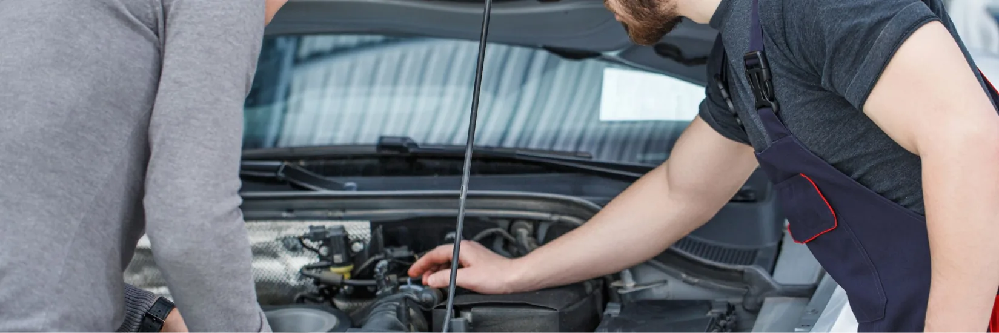

+7 (913) 243-18-55
+7 (913) 243-18-55Как проверить автомобиль с пробегом
перед оформлением
Документы, технические узлы и история автомобиля: что стоит проверить до принятия решения.

Проверку автомобиля лучше начинать не с тест-драйва, а с документов. Сверьте VIN в объявлении, на кузове и в регистрационных документах, посмотрите количество владельцев и отметки об ограничениях.
На осмотре обратите внимание на зазоры кузовных деталей, состояние лакокрасочного покрытия, следы коррозии и работу светотехники. Диагностика помогает увидеть ошибки электронных систем, а проверка на подъёмнике — оценить подвеску, тормоза и возможные течи.
Соберите результаты проверки в один список: что не требует вложений, что понадобится обслужить в ближайшее время и какие работы влияют на безопасность. Так проще сравнить несколько вариантов без спешки.